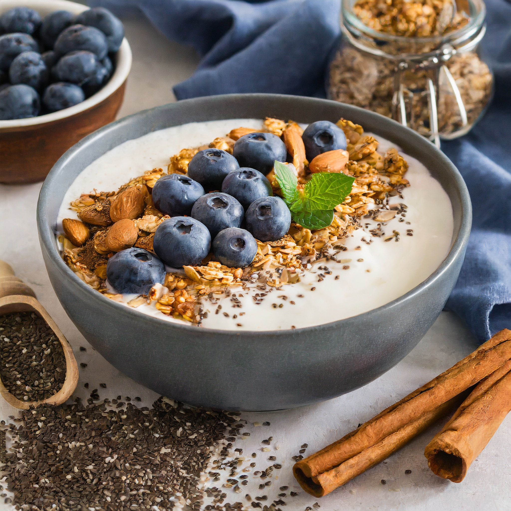

Yogurt Granola Fruit Bowl

Description
A healthy and delicious breakfast classic.
Greek yogurt with naturally sweetened granola and frozen blueberries. The frozen blueberries make all the difference!
Ingredients
- 1 tablespoon of 2% Greek Yogurt
- 1/2 cup Naturally sweetened granola
- 1 cup of frozen blueberries
- Fresh cinnamon to taste
- Chia seeds to taste
Steps
- Mix all ingredients in a large bowl and stir.
- Enjoy!